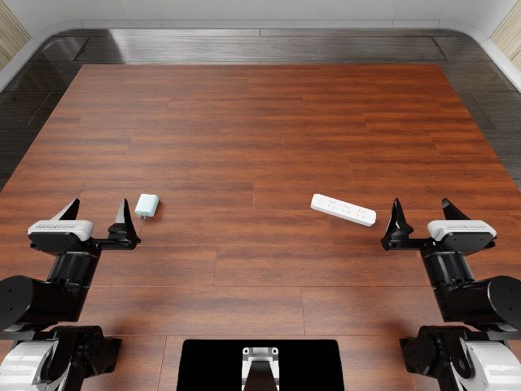
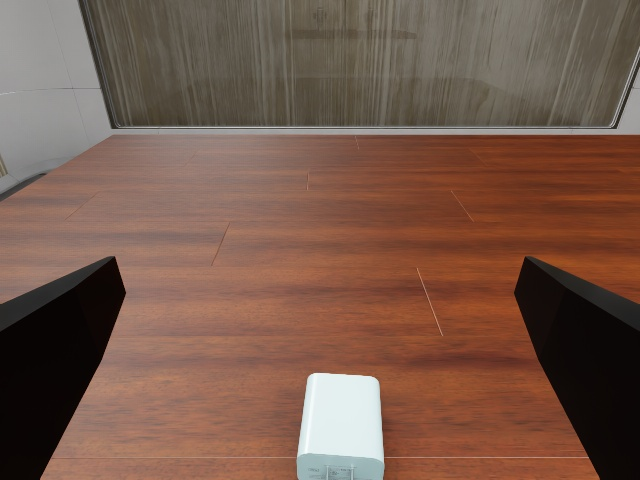
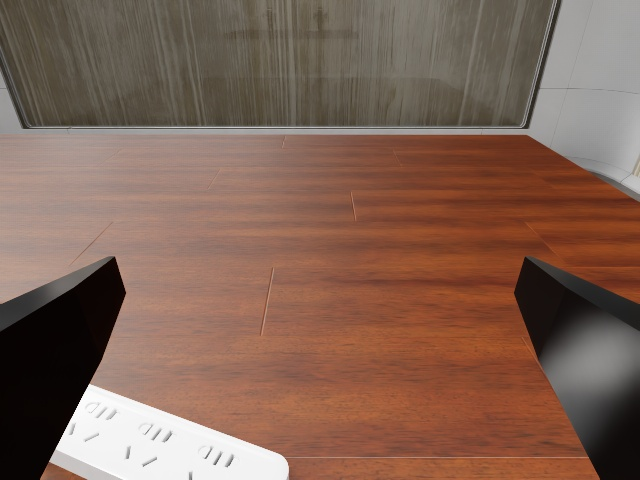

四个精细操作任务的原版 O2 试验。这里展示真实提交的第 1 次观察，用于讨论观察接口冗长的问题；没有采用后来设计的精简格式。
基于四例共 237 次实际模型调用，每次只计最新观察一次。数值为字符数，不是 token；不包含图片、历史对话、初始任务说明与固定 system 说明。
| 范围 | 平均字符 | 最小–最大 |
|---|---|---|
| L3 基础文本 | 966 | 843–1,295 |
| O1 新增 | 4,694 | 4,419–4,908 |
| O2 再新增 | 37,697 | 28,737–58,746 |
| 完整 L3＋O1＋O2 | 43,357 | 34,204–64,393 |
原始结果：插充电器 0、投硬币 20、插钥匙 15、插管 20（满分 100）。仅为四例试验，不代表完整基准成绩。
此条最新观察 34,207 字符。原始英文、数值与排列完整保留；下方滚动文本即模型输入。
Instruction: Plug the charger into the power strip.
World-frame grasp-point state, named as move_eef takes them (metres; degrees from the straight-down reference):
left_x=-0.2996
left_y=-0.2022
left_z=0.9215
left_pitch_deg=90.0
left_roll_deg=-0.0
left_yaw_deg=0.0
left_gripper=1.00
right_x=0.3004
right_y=-0.2022
right_z=0.9215
right_pitch_deg=90.0
right_roll_deg=-0.0
right_yaw_deg=0.0
right_gripper=1.00
Arm joint angles, radians, for context; not commandable:
left_joint1=0.0000
left_joint2=-0.0000
left_joint3=0.0000
left_joint4=0.0000
left_joint5=-0.0000
left_joint6=0.0000
right_joint1=0.0000
right_joint2=-0.0000
right_joint3=0.0000
right_joint4=0.0000
right_joint5=-0.0000
right_joint6=0.0000
O1 current sensor readings (unknown values remain null):
<l3-o1-v1>
{"contact":{"contact_threshold_n":1.0,"contact_threshold_rule":"resultant_magnitude >= 1.0","fingers":[{"arm_name":"left_arm","body_name":"link7","contact_above_threshold":false,"joint_name":"joint7","normal_force_w":[0.0,0.0,0.0],"resultant_magnitude":0.0,"status":"available"},{"arm_name":"left_arm","body_name":"link8","contact_above_threshold":false,"joint_name":"joint8","normal_force_w":[0.0,0.0,0.0],"resultant_magnitude":0.0,"status":"available"},{"arm_name":"right_arm","body_name":"link7","contact_above_threshold":false,"joint_name":"joint7","normal_force_w":[0.0,0.0,0.0],"resultant_magnitude":0.0,"status":"available"},{"arm_name":"right_arm","body_name":"link8","contact_above_threshold":false,"joint_name":"joint8","normal_force_w":[0.0,0.0,0.0],"resultant_magnitude":0.0,"status":"available"}],"frame":"world","physics_dt":0.004,"sample_window":"latest_physics_step","status":"available","units":"N"},"robots":[{"actual_position_in_command_coordinates":{"status":"available","value":0.9999944076493935},"arm_name":"left_arm","command_scale":{"sign":1.0,"status":"available","value":[-0.01,0.044]},"commanded_position_in_command_coordinates":{"status":"available","value":1.0},"end_effector_wrench":{"body_name":"link6","force_unit":"N","frame":"child_joint","status":"available","torque_unit":"N*m","value":[-5.884650439733161e-15,1.400501069281912e-11,-2.1118155560726068e-15,9.631723451577687e-14,-2.457050144687021e-16,1.2835928066973201e-12]},"gripper_dof_types":{"status":"available","value":[1,1]},"gripper_geometry":{"gap_m":null,"gap_status":"unknown","joint_limit_fractions":[0.9999931366606193,0.9999932213263079],"joint_limits_m":[[0.0,0.044],[0.0,0.044]],"joint_names":["joint7","joint8"],"joint_position_from_lower_m":[0.043999698013067245,0.043999701738357544],"joint_position_within_limits":[true,true],"joint_positions_m":[0.043999698013067245,0.043999701738357544],"opening_travel_from_joint_zero_m":0.08799939975142479,"opening_travel_status":"urdf_kinematic_estimate","status":"available","usd_consistency":"unverified"},"gripper_joint_names":["joint7","joint8"],"gripper_name":"left_ee","measured_joint_position":{"status":"available","units":["m","m"],"value":[0.043999698013067245,0.043999701738357544]},"measured_joint_velocity":{"status":"available","units":["m/s","m/s"],"value":[6.425302672141697e-06,6.348514943965711e-06]},"measured_minus_target":{"status":"available","value":[-3.019869327519631e-07,-2.982616424535012e-07]},"previous_control":{"status":"available","value":{"position":[0.044,0.044],"velocity":[0.0,0.0]}},"projected_joint_force":{"status":"available","units":["N","N"],"value":[8.805479782825198e-12,-6.560952302281375e-12]},"status":"available"},{"actual_position_in_command_coordinates":{"status":"available","value":0.9999944076493935},"arm_name":"right_arm","command_scale":{"sign":1.0,"status":"available","value":[-0.01,0.044]},"commanded_position_in_command_coordinates":{"status":"available","value":1.0},"end_effector_wrench":{"body_name":"link6","force_unit":"N","frame":"child_joint","status":"available","torque_unit":"N*m","value":[-5.966731743970366e-15,1.4014771981818441e-11,-2.1029570737519845e-15,9.581014638344182e-14,-2.4672484213719627e-16,1.2840283307100075e-12]},"gripper_dof_types":{"status":"available","value":[1,1]},"gripper_geometry":{"gap_m":null,"gap_status":"unknown","joint_limit_fractions":[0.9999931366606193,0.9999932213263079],"joint_limits_m":[[0.0,0.044],[0.0,0.044]],"joint_names":["joint7","joint8"],"joint_position_from_lower_m":[0.043999698013067245,0.043999701738357544],"joint_position_within_limits":[true,true],"joint_positions_m":[0.043999698013067245,0.043999701738357544],"opening_travel_from_joint_zero_m":0.08799939975142479,"opening_travel_status":"urdf_kinematic_estimate","status":"available","usd_consistency":"unverified"},"gripper_joint_names":["joint7","joint8"],"gripper_name":"right_ee","measured_joint_position":{"status":"available","units":["m","m"],"value":[0.043999698013067245,0.043999701738357544]},"measured_joint_velocity":{"status":"available","units":["m/s","m/s"],"value":[6.425302672141697e-06,6.348514943965711e-06]},"measured_minus_target":{"status":"available","value":[-3.019869327519631e-07,-2.982616424535012e-07]},"previous_control":{"status":"available","value":{"position":[0.044,0.044],"velocity":[0.0,0.0]}},"projected_joint_force":{"status":"available","units":["N","N"],"value":[8.805479782825198e-12,-6.560952302281375e-12]},"status":"available"}],"schema":"l3-o1-v1","status":"available"}
</l3-o1-v1>
O2 robot-self and camera readings:
<l3-o2-v1>
{"cameras":[{"camera_axes":"+X_right,+Y_down,+Z_forward","frame":"env","matrix_convention":"column_vectors; destination_from_source","name":"cam_head","pixel_convention":"u=column+0.5,v=row+0.5","sample":{"physics_step":842,"render_time_s":3.1333333333333333,"simulation_time_s":3.368},"source":"actual_rgb_render_product","status":"available","value":{"T_env_from_camera_cv":[[1.0,0.0,0.0,0.0],[0.0,-0.8660253513624241,0.5000000907975816,-0.4099999964237213],[0.0,-0.5000000907975817,-0.8660253513624241,1.3079999685287476],[0.0,0.0,0.0,1.0]],"clipping_range_m":[0.004999999888241291,10.0],"distortion":{"coefficients":[],"model":"pinhole"},"fov_xy_deg":[95.99935762690905,79.58521303371866],"intrinsics_px":[[288.1325423543974,0.0,320.0],[0.0,288.1325423543974,240.0],[0.0,0.0,1.0]],"resolution_wh":[640,480],"validation":{"camera_pose_max_abs_error":1.1102230246251565e-16,"projection_error_px":5.684341886080802e-14}}},{"camera_axes":"+X_right,+Y_down,+Z_forward","frame":"env","matrix_convention":"column_vectors; destination_from_source","name":"cam_left_wrist","pixel_convention":"u=column+0.5,v=row+0.5","sample":{"physics_step":842,"render_time_s":3.1333333333333333,"simulation_time_s":3.368},"source":"actual_rgb_render_product","status":"available","value":{"T_env_from_camera_cv":[[0.9999999565441572,0.00014753825160788758,-0.0002552335166974952,-0.29955450859185184],[0.0002948078402808936,-0.5000295202500169,0.8660083094098321,-0.267457787150196],[1.450589420062375e-07,-0.8660083470215529,-0.5000295420162459,0.9724396942771284],[0.0,0.0,0.0,0.9999999999999998]],"clipping_range_m":[9.999999747378752e-05,10.0],"distortion":{"coefficients":[],"model":"pinhole"},"fov_xy_deg":[77.73495663427114,62.303502575447986],"intrinsics_px":[[397.04128037660917,0.0,320.0],[0.0,397.04128037660917,240.0],[0.0,0.0,1.0]],"resolution_wh":[640,480],"validation":{"camera_pose_max_abs_error":3.4767679635958515e-16,"projection_error_px":5.684341886080802e-14}}},{"camera_axes":"+X_right,+Y_down,+Z_forward","frame":"env","matrix_convention":"column_vectors; destination_from_source","name":"cam_right_wrist","pixel_convention":"u=column+0.5,v=row+0.5","sample":{"physics_step":842,"render_time_s":3.1333333333333333,"simulation_time_s":3.368},"source":"actual_rgb_render_product","status":"available","value":{"T_env_from_camera_cv":[[0.9999999565441572,0.00014753825160788758,-0.0002552335166974952,0.30044551526318064],[0.0002948078402808936,-0.5000295202500169,0.8660083094098321,-0.26745783185191646],[1.450589420062375e-07,-0.8660083470215529,-0.5000295420162459,0.9724397200877131],[0.0,0.0,0.0,0.9999999999999998]],"clipping_range_m":[9.999999747378752e-05,10.0],"distortion":{"coefficients":[],"model":"pinhole"},"fov_xy_deg":[77.73495663427114,62.303502575447986],"intrinsics_px":[[397.04128037660917,0.0,320.0],[0.0,397.04128037660917,240.0],[0.0,0.0,1.0]],"resolution_wh":[640,480],"validation":{"camera_pose_max_abs_error":3.4767679635958515e-16,"projection_error_px":5.684341886080802e-14}}}],"contact":{"arm_asymmetry":[{"arm_name":"left_arm","difference_n":null,"normalized_difference":null,"status":"unavailable"},{"arm_name":"right_arm","difference_n":null,"normalized_difference":null,"status":"unavailable"}],"contact_threshold_n":1.0,"contact_threshold_rule":"normal_resultant_magnitude >= 1.0","cross_arm_asymmetry":{"difference_n":null,"normalized_difference":null,"status":"unavailable"},"epoch":1,"fingers":[{"arm_name":"left_arm","body_name":"link7","buffer_saturated":null,"contact_above_threshold":null,"contacts":[],"detail_output_truncated":false,"detail_status":"unavailable","friction_anchors":[],"friction_magnitude_n":null,"friction_output_truncated":false,"friction_resultant_w_n":null,"friction_status":"unavailable","joint_name":"joint7","normal_magnitude_n":null,"normal_resultant_w_n":null,"patch_migration":{"centroid_finger_m":null,"delta_finger_m":null,"distance_m":null,"inference_only":true,"speed_m_s":null,"status":"unavailable"},"statistics":{"contact_active_duration_s":null,"friction_impulse_w_ns":null,"friction_missing_sample_count":0,"friction_observed_duration_s":0,"latest_contact_interval":null,"mean_friction_n":null,"mean_normal_n":null,"missing_sample_count":0,"normal_impulse_w_ns":null,"observed_duration_s":0,"peak_friction_n":null,"peak_normal_n":null,"status":"unavailable"},"status":"unavailable"},{"arm_name":"left_arm","body_name":"link8","buffer_saturated":null,"contact_above_threshold":null,"contacts":[],"detail_output_truncated":false,"detail_status":"unavailable","friction_anchors":[],"friction_magnitude_n":null,"friction_output_truncated":false,"friction_resultant_w_n":null,"friction_status":"unavailable","joint_name":"joint8","normal_magnitude_n":null,"normal_resultant_w_n":null,"patch_migration":{"centroid_finger_m":null,"delta_finger_m":null,"distance_m":null,"inference_only":true,"speed_m_s":null,"status":"unavailable"},"statistics":{"contact_active_duration_s":null,"friction_impulse_w_ns":null,"friction_missing_sample_count":0,"friction_observed_duration_s":0,"latest_contact_interval":null,"mean_friction_n":null,"mean_normal_n":null,"missing_sample_count":0,"normal_impulse_w_ns":null,"observed_duration_s":0,"peak_friction_n":null,"peak_normal_n":null,"status":"unavailable"},"status":"unavailable"},{"arm_name":"right_arm","body_name":"link7","buffer_saturated":null,"contact_above_threshold":null,"contacts":[],"detail_output_truncated":false,"detail_status":"unavailable","friction_anchors":[],"friction_magnitude_n":null,"friction_output_truncated":false,"friction_resultant_w_n":null,"friction_status":"unavailable","joint_name":"joint7","normal_magnitude_n":null,"normal_resultant_w_n":null,"patch_migration":{"centroid_finger_m":null,"delta_finger_m":null,"distance_m":null,"inference_only":true,"speed_m_s":null,"status":"unavailable"},"statistics":{"contact_active_duration_s":null,"friction_impulse_w_ns":null,"friction_missing_sample_count":0,"friction_observed_duration_s":0,"latest_contact_interval":null,"mean_friction_n":null,"mean_normal_n":null,"missing_sample_count":0,"normal_impulse_w_ns":null,"observed_duration_s":0,"peak_friction_n":null,"peak_normal_n":null,"status":"unavailable"},"status":"unavailable"},{"arm_name":"right_arm","body_name":"link8","buffer_saturated":null,"contact_above_threshold":null,"contacts":[],"detail_output_truncated":false,"detail_status":"unavailable","friction_anchors":[],"friction_magnitude_n":null,"friction_output_truncated":false,"friction_resultant_w_n":null,"friction_status":"unavailable","joint_name":"joint8","normal_magnitude_n":null,"normal_resultant_w_n":null,"patch_migration":{"centroid_finger_m":null,"delta_finger_m":null,"distance_m":null,"inference_only":true,"speed_m_s":null,"status":"unavailable"},"statistics":{"contact_active_duration_s":null,"friction_impulse_w_ns":null,"friction_missing_sample_count":0,"friction_observed_duration_s":0,"latest_contact_interval":null,"mean_friction_n":null,"mean_normal_n":null,"missing_sample_count":0,"normal_impulse_w_ns":null,"observed_duration_s":0,"peak_friction_n":null,"peak_normal_n":null,"status":"unavailable"},"status":"unavailable"}],"frame":"world","physics_dt_s":null,"schema":"l3-o2-contact-v1","source":"physx_contact_tensors","status":"unavailable","window":{"capacity_steps":512,"coverage_complete":false,"dropped_steps":0,"duration_s":0,"end_s":null,"mode":"rolling_physics_steps","sample_count":0,"start_s":null}},"kinematics":{"bimanual_relative_pose":{"frame":"left_tcp","source":"measured_robot_tcp_transforms","status":"available","units":"m,rotation_matrix","value":{"T_left_tcp_from_right_tcp":[[1.0000000000000002,2.929816888565129e-20,-1.7561784772345992e-24,-0.0001812146036656026],[2.1466541470381935e-20,1.0000000000000002,1.7232242818718228e-23,-0.5999999964762417],[8.684329328037548e-25,2.748566869394481e-23,1.0,-8.763407299827719e-08],[0.0,0.0,0.0,1.0]],"tcp_distance_m":0.6000000238418581}},"robots":[{"arm_name":"left_arm","fk_validation":{"source":"robot_urdf_vs_measured_body_link_poses","status":"available","value":{"matches_measured_links":true,"max_transform_abs_error":2.499392064100809e-07,"tolerance":0.0001}},"frames":{"frame":"env","source":"measured_robot_body_link_pose","status":"available","units":"m,rotation_matrix","value":{"T_env_from_tcp":[[-0.0003020243274411971,-0.9999999543906409,-1.460567825625092e-07,-0.2995744094741075],[0.9999999543906514,-0.00030202432743786645,-2.3684511718237117e-08,-0.2021998759064796],[2.364039793648053e-08,-1.46063929199677e-07,0.999999999999989,0.9215000307281418],[0.0,0.0,0.0,1.0]],"links":[{"T_env_from_body":[[-0.00030194002101779915,-0.9999999544161108,0.0,-0.30000001192092896],[0.9999999544161108,-0.00030194002101779915,0.0,-0.44999998807907104],[0.0,0.0,1.0,0.7649999856948853],[0.0,0.0,0.0,1.0]],"body_name":"base_link"},{"T_env_from_body":[[-0.0003020243274387546,-0.9999999543906507,-4.2153214734583145e-08,-0.30000001192092896],[0.9999999543906507,-0.000302024327440531,4.214048536025358e-08,-0.44999998807907104],[-4.2153214734583145e-08,-4.214048536025358e-08,0.9999999999999982,0.8255000114440918],[0.0,0.0,0.0,1.0]],"body_name":"link1"},{"T_env_from_body":[[-0.00030194004646855177,-0.9999999544161022,-3.990610263596703e-08,-0.30000603199005127],[0.9999999544161025,-0.00030194004646988404,3.384997544396047e-08,-0.4300000071525574],[-3.3862023151430995e-08,-3.9895880153732824e-08,0.9999999999999987,0.8654999732971191],[0.0,0.0,0.0,1.0]],"body_name":"link2"},{"T_env_from_body":[[-0.00030194004661088236,0.9999999543907263,-7.124128883267448e-06,-0.2999262809753418],[0.9999999544161022,0.00030194004632011495,-4.190529356242057e-08,-0.6940000057220459],[-3.9754231846147074e-08,-7.124141211408178e-06,-0.9999999999746225,0.8654999732971191],[0.0,0.0,0.0,1.0]],"body_name":"link3"},{"T_env_from_body":[[-0.00030202427676262467,0.9999999543652625,-7.128074469860671e-06,-0.299999862909317],[0.9999999543906648,0.0003020242762744596,-6.956504713365384e-08,-0.4490000307559967],[-6.74121924260806e-08,-7.1280951550869825e-06,-0.9999999999745928,0.9214999675750732],[0.0,0.0,0.0,1.0]],"body_name":"link4"},{"T_env_from_body":[[-0.0003021085828398551,0.9999999543400208,-7.096478958310896e-06,-0.29951971769332886],[0.9999999543652004,0.00030210858302726074,2.5269824923922162e-08,-0.3812498450279236],[2.7413730972678833e-08,-7.096471000233506e-06,-0.9999999999748193,1.0080000162124634],[0.0,0.0,0.0,1.0]],"body_name":"link5"},{"T_env_from_body":[[-0.0003020243274411971,-0.9999999543906409,-1.460567825625092e-07,-0.2995290756225586],[0.9999999543906514,-0.00030202432743786645,-2.3684511718237117e-08,-0.35229986906051636],[2.364039793648053e-08,-1.46063929199677e-07,0.999999999999989,0.921500027179718],[0.0,0.0,0.0,1.0]],"body_name":"link6"},{"T_env_from_body":[[0.00029477506955100097,0.9999999565538182,-1.420544539880748e-07,-0.2995463013648987],[-0.9999999565538282,0.0002947750695502238,-5.4796539654221255e-09,-0.2952998876571655],[-5.437779615797841e-09,1.4205606308173138e-07,0.9999999999999899,0.921500027179718],[0.0,0.0,0.0,1.0]],"body_name":"camera_base"},{"T_env_from_body":[[-0.0003020243274411971,-0.9999999543906409,-1.460567825625092e-07,-0.3684508800506592],[0.9999999543906514,-0.00030202432743786645,-2.3684511718237117e-08,-0.2657506763935089],[2.364039793648053e-08,-1.46063929199677e-07,0.999999999999989,0.921256422996521],[0.0,0.0,0.0,1.0]],"body_name":"link7"},{"T_env_from_body":[[-0.0003020243274411971,-0.9999999543906409,-1.460567825625092e-07,-0.23065553605556488],[0.9999999543906514,-0.00030202432743786645,-2.3684511718237117e-08,-0.2657090425491333],[2.364039793648053e-08,-1.46063929199677e-07,0.999999999999989,0.9212563633918762],[0.0,0.0,0.0,1.0]],"body_name":"link8"},{"T_env_from_body":[[-0.0002769793071930593,-0.9999999565426052,-0.00010098144044345947,-0.29955440759658813],[0.9396809018328933,-0.000294813103070668,0.3420522121193704,-0.26779988408088684],[-0.3420522270253242,-1.4894628760919737e-07,0.9396809426539382,0.971500039100647],[0.0,0.0,0.0,1.0]],"body_name":"camera"}],"tcp_offset_link6_m":[0.1501,0.0,0.0]}},"jacobian":{"frame":"env","source":"urdf_geometric_jacobian_validated_by_fk","status":"available","units":"m/rad,rad/rad","value":{"joint_names":["joint1","joint2","joint3","joint4","joint5","joint6"],"matrix":[[-0.24780013979854063,-1.6908640096100217e-05,2.052160558057856e-05,1.8130939563519023e-06,0.17904999183337295,3.7905793512714216e-17],[0.0004255906386336217,0.05599999377258655,-0.055999996356404375,5.474451805129275e-10,5.4062361032193e-05,1.1445276668846955e-20],[0.0,-0.22779999999999986,0.4917999999867288,0.24679999999334018,-1.3153747474995342e-06,2.3689817468808272e-17],[0.0,-0.9999999544161107,0.9999999543891258,0.9999999543891258,-7.346409871766228e-06,-0.0003019400225280706],[0.0,-0.00030194002152935696,0.00030194002152120913,0.00030194002152120913,-2.2181732968647078e-09,0.9999999544161103],[1.0,0.0,-7.346410206643587e-06,-7.346410206643587e-06,-0.9999999999730151,1.9664297944499607e-15]],"point":"l3_tcp","rows":["vx","vy","vz","wx","wy","wz"]}},"joints":{"source":"measured_joint_state_and_robot_urdf","status":"available","units":"rad,rad/s","value":{"limit_fraction_unclipped":[0.5000000000000255,0.4999999999999999,0.5,0.5,0.4999999999999501,0.5000000000003982],"limits_rad":[[-9.999999046325684,9.999999046325684],[-9.999999046325684,9.999999046325684],[-9.999999046325684,9.999999046325684],[-9.999999046325684,9.999999046325684],[-9.999999046325684,9.999999046325684],[-3.1399998664855957,3.1399998664855957]],"limits_source":"measured_articulation_joint_pos_limits","lower_margin_rad":[9.999999046326195,9.999999046325682,9.999999046325684,9.999999046325684,9.999999046324685,3.1399998664880964],"names":["joint1","joint2","joint3","joint4","joint5","joint6"],"nearest_margin_rad":[9.999999046325172,9.999999046325682,9.999999046325684,9.999999046325684,9.999999046324685,3.139999866483095],"position_rad":[5.115578100012286e-13,-1.156115904982105e-15,1.767066072491508e-17,7.853062682560905e-16,-9.987136985467604e-13,2.5006576670483227e-12],"upper_margin_rad":[9.999999046325172,9.999999046325685,9.999999046325684,9.999999046325684,9.999999046326682,3.139999866483095],"velocity_limits_rad_s":[5.0,5.0,5.0,5.0,5.0,5.0],"velocity_limits_source":"articulation_joint_vel_limits","velocity_margin_rad_s":[4.999999999384861,4.999999999999128,4.999999999999717,4.999999999999888,4.9999999994135145,4.99999999784145],"velocity_rad_s":[6.1513899529686e-10,-8.719054124528558e-13,2.836050350726177e-13,1.1162978093975928e-13,-5.864855823212167e-10,2.158549561315226e-09],"velocity_status":"available"}},"singularity":{"source":"normalized_urdf_jacobian_svd","status":"available","units":"dimensionless","value":{"characteristic_length_m":0.5,"inverse_condition":0.03926293219645976,"meaning":"0 singular or deficient for 6D TCP control; 1 isotropic under this normalization; not reachability","normalization":"diag(1/L,1/L,1/L,1,1,1) J diag(joint_upper-joint_lower)","singular_values":[41.5467899542151,30.762729221210776,6.9792344095911325,6.27999973297119,1.7881917228613877,1.631248796952903]}},"status":"partial","tcp_acceleration":{"source":"finite_difference_of_measured_tcp_twist","status":"unavailable","value":null},"tcp_twist":{"frame":"env","source":"measured_body_link_vel_w","status":"available","units":"m/s,rad/s","value":{"angular_rad_s":[6.192116589441576e-13,2.158550005404436e-09,1.2016240225065644e-09],"formula":"v_tcp=v_link+omega_cross_R_link*[0.1501,0,0]","linear_m_s":[-2.5744162175535194e-10,1.653760951070886e-13,3.663955813208914e-13],"point":"l3_tcp"}},"tool_geometry":{"frame":"env","source":"robot_self_usd_mesh","status":"available","units":"m","value":{"collision_gap_m":null,"collision_geometry_status":"not_verified","gap_definition":"signed separation of opposed terminal inner USD mesh planes over their overlap","gap_source":"actual_robot_usd_mesh_and_measured_body_link_poses","inner_working_surface_gap_m":0.0888065162612865,"jaw_axis_link6":[0.0,1.0,0.0],"l3_tcp_offset_link6_m":[0.1501,0.0,0.0],"object_clearance_or_grasp_success":"not_inferred","tool_axis_link6":[1.0,0.0,0.0],"working_surface_overlap_m":[0.014999984299665703,0.018327842828699148],"working_surfaces":[{"body_name":"link7","center_env_m":[-0.3439756425266987,-0.20224327932497502,0.9200596203593954],"corners_env_m":[[-0.3439733760056942,-0.20974327906388415,0.9108956589019551],[-0.3439733786826116,-0.20974327949797206,0.9292235814622295],[-0.34397790637078585,-0.19474327915197798,0.9108956592565611],[-0.34397790904770326,-0.19474327958606585,0.9292235818168355]],"inward_normal_env":[0.9999999543906409,0.00030202432743786645,1.46063929199677e-07]},{"body_name":"link8","center_env_m":[-0.2551691303207308,-0.2022164413002472,0.9200595540649102],"corners_env_m":[[-0.25516686379972636,-0.20971644103915638,0.9108955930731314],[-0.2551668664766436,-0.20971644147324425,0.9292235147020832],[-0.255171394164818,-0.19471644112725017,0.9108955934277373],[-0.2551713968417353,-0.19471644156133805,0.9292235150566891]],"inward_normal_env":[-0.9999999543906409,-0.00030202432743786645,-1.46063929199677e-07]}]}},"wrist_wrench_axes":{"frame":"env_and_link6_axes","source":"incoming_joint_wrench_with_self_usd_joint_frame","status":"available","units":"N,N*m","value":{"T_link6_from_child_joint":[[1.0,0.0,0.0,0.0],[0.0,1.0,0.0,0.0],[0.0,0.0,1.0,0.0],[0.0,0.0,0.0,1.0]],"approach_axis_link6":[1.0,0.0,0.0],"closing_axis_link6":[0.0,1.0,0.0],"force_along_approach_n":-5.884650439733161e-15,"force_along_closing_axis_n":1.400501069281912e-11,"force_env_n":[-1.4005008276443522e-11,-1.0114504056579591e-14,-2.1138613220783382e-15],"force_tool_n":[-5.884650439733161e-15,1.400501069281912e-11,-2.1118155560726068e-15],"joint_anchor_env_m":[-0.2995290756225586,-0.35229986906051636,0.921500027179718],"meaning":"total_incoming_joint_wrench_not_isolated_external_contact_or_motor_torque","torque_about_approach_nm":9.631723451577687e-14,"torque_about_closing_axis_nm":-2.457050144687021e-16,"torque_env_nm":[2.1642737785116373e-16,9.631727393043341e-14,1.2835928090101724e-12],"torque_reference":"incoming_joint_anchor_not_tcp","torque_tool_nm":[9.631723451577687e-14,-2.457050144687021e-16,1.2835928066973201e-12]}}},{"arm_name":"right_arm","fk_validation":{"source":"robot_urdf_vs_measured_body_link_poses","status":"available","value":{"matches_measured_links":true,"max_transform_abs_error":2.499392064100809e-07,"tolerance":0.0001}},"frames":{"frame":"env","source":"measured_robot_body_link_pose","status":"available","units":"m,rotation_matrix","value":{"T_env_from_tcp":[[-0.0003020243274411971,-0.9999999543906409,-1.460567825625092e-07,0.3004256143677504],[0.9999999543906514,-0.00030202432743786645,-2.3684511718237117e-08,-0.2021998759064796],[2.364039793648053e-08,-1.46063929199677e-07,0.999999999999989,0.9215000307281418],[0.0,0.0,0.0,1.0]],"links":[{"T_env_from_body":[[-0.00030194002101779915,-0.9999999544161108,0.0,0.30000001192092896],[0.9999999544161108,-0.00030194002101779915,0.0,-0.44999998807907104],[0.0,0.0,1.0,0.7649999856948853],[0.0,0.0,0.0,1.0]],"body_name":"base_link"},{"T_env_from_body":[[-0.0003020243274387546,-0.9999999543906507,-4.2153214734583145e-08,0.30000001192092896],[0.9999999543906507,-0.000302024327440531,4.214048536025358e-08,-0.44999998807907104],[-4.2153214734583145e-08,-4.214048536025358e-08,0.9999999999999982,0.8255000114440918],[0.0,0.0,0.0,1.0]],"body_name":"link1"},{"T_env_from_body":[[-0.00030194004646855177,-0.9999999544161022,-3.990610263596703e-08,0.29999399185180664],[0.9999999544161025,-0.00030194004646988404,3.384997544396047e-08,-0.4300000071525574],[-3.3862023151430995e-08,-3.9895880153732824e-08,0.9999999999999987,0.8654999732971191],[0.0,0.0,0.0,1.0]],"body_name":"link2"},{"T_env_from_body":[[-0.00030194004661088236,0.9999999543907263,-7.124128883267448e-06,0.3000737428665161],[0.9999999544161022,0.00030194004632011495,-4.190529356242057e-08,-0.6940000057220459],[-3.9754231846147074e-08,-7.124141211408178e-06,-0.9999999999746225,0.8654999732971191],[0.0,0.0,0.0,1.0]],"body_name":"link3"},{"T_env_from_body":[[-0.00030202427676262467,0.9999999543652625,-7.128074469860671e-06,0.3000001609325409],[0.9999999543906648,0.0003020242762744596,-6.956504713365384e-08,-0.4490000307559967],[-6.74121924260806e-08,-7.1280951550869825e-06,-0.9999999999745928,0.9214999675750732],[0.0,0.0,0.0,1.0]],"body_name":"link4"},{"T_env_from_body":[[-0.0003021085828398551,0.9999999543400208,-7.096478958310896e-06,0.30048030614852905],[0.9999999543652004,0.00030210858302726074,2.5269824923922162e-08,-0.3812498450279236],[2.7413730972678833e-08,-7.096471000233506e-06,-0.9999999999748193,1.0080000162124634],[0.0,0.0,0.0,1.0]],"body_name":"link5"},{"T_env_from_body":[[-0.0003020243274411971,-0.9999999543906409,-1.460567825625092e-07,0.3004709482192993],[0.9999999543906514,-0.00030202432743786645,-2.3684511718237117e-08,-0.35229986906051636],[2.364039793648053e-08,-1.46063929199677e-07,0.999999999999989,0.921500027179718],[0.0,0.0,0.0,1.0]],"body_name":"link6"},{"T_env_from_body":[[0.00029477506955100097,0.9999999565538182,-1.420544539880748e-07,0.30045372247695923],[-0.9999999565538282,0.0002947750695502238,-5.4796539654221255e-09,-0.2952998876571655],[-5.437779615797841e-09,1.4205606308173138e-07,0.9999999999999899,0.921500027179718],[0.0,0.0,0.0,1.0]],"body_name":"camera_base"},{"T_env_from_body":[[-0.0003020243274411971,-0.9999999543906409,-1.460567825625092e-07,0.23154912889003754],[0.9999999543906514,-0.00030202432743786645,-2.3684511718237117e-08,-0.2657506763935089],[2.364039793648053e-08,-1.46063929199677e-07,0.999999999999989,0.921256422996521],[0.0,0.0,0.0,1.0]],"body_name":"link7"},{"T_env_from_body":[[-0.0003020243274411971,-0.9999999543906409,-1.460567825625092e-07,0.36934447288513184],[0.9999999543906514,-0.00030202432743786645,-2.3684511718237117e-08,-0.2657090425491333],[2.364039793648053e-08,-1.46063929199677e-07,0.999999999999989,0.9212563633918762],[0.0,0.0,0.0,1.0]],"body_name":"link8"},{"T_env_from_body":[[-0.0002769793071930593,-0.9999999565426052,-0.00010098144044345947,0.3004456162452698],[0.9396809018328933,-0.000294813103070668,0.3420522121193704,-0.26779988408088684],[-0.3420522270253242,-1.4894628760919737e-07,0.9396809426539382,0.971500039100647],[0.0,0.0,0.0,1.0]],"body_name":"camera"}],"tcp_offset_link6_m":[0.1501,0.0,0.0]}},"jacobian":{"frame":"env","source":"urdf_geometric_jacobian_validated_by_fk","status":"available","units":"m/rad,rad/rad","value":{"joint_names":["joint1","joint2","joint3","joint4","joint5","joint6"],"matrix":[[-0.24780013979854063,-1.690864009610017e-05,2.0521605580578514e-05,1.8130939563519023e-06,0.17904999183337295,3.7907886819382885e-17],[0.0004255906386336217,0.05599999377258655,-0.055999996356404375,5.474451805129275e-10,5.4062361032193e-05,1.1445908721937952e-20],[0.0,-0.22779999999999986,0.4917999999867288,0.24679999999334018,-1.3153747474995342e-06,2.3920210430461442e-17],[0.0,-0.9999999544161107,0.9999999543891258,0.9999999543891258,-7.346409871766228e-06,-0.0003019400225280691],[0.0,-0.0003019400215293561,0.00030194002152120826,0.00030194002152120826,-2.218173296878643e-09,0.9999999544161103],[1.0,0.0,-7.346410206643587e-06,-7.346410206643587e-06,-0.9999999999730151,1.966415848368921e-15]],"point":"l3_tcp","rows":["vx","vy","vz","wx","wy","wz"]}},"joints":{"source":"measured_joint_state_and_robot_urdf","status":"available","units":"rad,rad/s","value":{"limit_fraction_unclipped":[0.5000000000000255,0.4999999999999999,0.5,0.5,0.4999999999999501,0.5000000000003982],"limits_rad":[[-9.999999046325684,9.999999046325684],[-9.999999046325684,9.999999046325684],[-9.999999046325684,9.999999046325684],[-9.999999046325684,9.999999046325684],[-9.999999046325684,9.999999046325684],[-3.1399998664855957,3.1399998664855957]],"limits_source":"measured_articulation_joint_pos_limits","lower_margin_rad":[9.999999046326195,9.999999046325682,9.999999046325684,9.999999046325684,9.999999046324685,3.1399998664880964],"names":["joint1","joint2","joint3","joint4","joint5","joint6"],"nearest_margin_rad":[9.999999046325172,9.999999046325682,9.999999046325684,9.999999046325684,9.999999046324685,3.139999866483095],"position_rad":[5.115569426394906e-13,-1.1561103992679478e-15,1.7667572032507807e-17,7.853009213606109e-16,-9.98713048025457e-13,2.5006572333674537e-12],"upper_margin_rad":[9.999999046325172,9.999999046325685,9.999999046325684,9.999999046325684,9.999999046326682,3.139999866483095],"velocity_limits_rad_s":[5.0,5.0,5.0,5.0,5.0,5.0],"velocity_limits_source":"articulation_joint_vel_limits","velocity_margin_rad_s":[4.999999999384861,4.999999999999128,4.999999999999717,4.999999999999888,4.9999999994135145,4.99999999784145],"velocity_rad_s":[6.151389397857088e-10,-8.719037319394884e-13,2.836019179913718e-13,1.1162857476484239e-13,-5.864856933435192e-10,2.158549561315226e-09],"velocity_status":"available"}},"singularity":{"source":"normalized_urdf_jacobian_svd","status":"available","units":"dimensionless","value":{"characteristic_length_m":0.5,"inverse_condition":0.03926293219645976,"meaning":"0 singular or deficient for 6D TCP control; 1 isotropic under this normalization; not reachability","normalization":"diag(1/L,1/L,1/L,1,1,1) J diag(joint_upper-joint_lower)","singular_values":[41.5467899542151,30.762729221210776,6.9792344095911325,6.27999973297119,1.7881917228613877,1.631248796952903]}},"status":"partial","tcp_acceleration":{"source":"finite_difference_of_measured_tcp_twist","status":"unavailable","value":null},"tcp_twist":{"frame":"env","source":"measured_body_link_vel_w","status":"available","units":"m/s,rad/s","value":{"angular_rad_s":[6.192061837231866e-13,2.158550005404436e-09,1.2016241335288669e-09],"formula":"v_tcp=v_link+omega_cross_R_link*[0.1501,0,0]","linear_m_s":[-2.574416869920561e-10,1.6537568349822476e-13,3.6639363463050717e-13],"point":"l3_tcp"}},"tool_geometry":{"frame":"env","source":"robot_self_usd_mesh","status":"available","units":"m","value":{"collision_gap_m":null,"collision_geometry_status":"not_verified","gap_definition":"signed separation of opposed terminal inner USD mesh planes over their overlap","gap_source":"actual_robot_usd_mesh_and_measured_body_link_poses","inner_working_surface_gap_m":0.0888065162612865,"jaw_axis_link6":[0.0,1.0,0.0],"l3_tcp_offset_link6_m":[0.1501,0.0,0.0],"object_clearance_or_grasp_success":"not_inferred","tool_axis_link6":[1.0,0.0,0.0],"working_surface_overlap_m":[0.014999984299665814,0.018327842828699148],"working_surfaces":[{"body_name":"link7","center_env_m":[0.256024366413998,-0.20224327932497496,0.9200596203593954],"corners_env_m":[[0.25602663293500255,-0.2097432790638841,0.9108956589019551],[0.25602663025808514,-0.209743279497972,0.9292235814622295],[0.2560221025699109,-0.19474327915197792,0.9108956592565611],[0.2560220998929935,-0.1947432795860658,0.9292235818168355]],"inward_normal_env":[0.9999999543906409,0.00030202432743786645,1.46063929199677e-07]},{"body_name":"link8","center_env_m":[0.3448308786199659,-0.20221644130024727,0.9200595540649102],"corners_env_m":[[0.34483314514097035,-0.20971644103915643,0.9108955930731314],[0.3448331424640531,-0.2097164414732443,0.9292235147020832],[0.34482861477587873,-0.19471644112725023,0.9108955934277373],[0.34482861209896143,-0.1947164415613381,0.9292235150566891]],"inward_normal_env":[-0.9999999543906409,-0.00030202432743786645,-1.46063929199677e-07]}]}},"wrist_wrench_axes":{"frame":"env_and_link6_axes","source":"incoming_joint_wrench_with_self_usd_joint_frame","status":"available","units":"N,N*m","value":{"T_link6_from_child_joint":[[1.0,0.0,0.0,0.0],[0.0,1.0,0.0,0.0],[0.0,0.0,1.0,0.0],[0.0,0.0,0.0,1.0]],"approach_axis_link6":[1.0,0.0,0.0],"closing_axis_link6":[0.0,1.0,0.0],"force_along_approach_n":-5.966731743970366e-15,"force_along_closing_axis_n":1.4014771981818441e-11,"force_env_n":[-1.4014769540208381e-11,-1.0199533504027875e-14,-2.105004267470376e-15],"force_tool_n":[-5.966731743970366e-15,1.4014771981818441e-11,-2.1029570737519845e-15],"joint_anchor_env_m":[0.3004709482192993,-0.35229986906051636,0.921500027179718],"meaning":"total_incoming_joint_wrench_not_isolated_external_contact_or_motor_torque","torque_about_approach_nm":9.581014638344182e-14,"torque_about_closing_axis_nm":-2.4672484213719627e-16,"torque_env_nm":[2.1760029481403008e-16,9.581018611892391e-14,1.284028333011021e-12],"torque_reference":"incoming_joint_anchor_not_tcp","torque_tool_nm":[9.581014638344182e-14,-2.4672484213719627e-16,1.2840283307100075e-12]}}}],"sample_time_s":3.368,"schema":"l3-o2-kinematics-v1","status":"partial"},"sample":{"physics_step":842,"simulation_time_s":3.368},"schema":"l3-o2-v1","status":"partial"}
</l3-o2-v1>
Env steps remaining before the episode ends: 400
camera 'cam_head' (step 0):
camera 'cam_left_wrist' (step 0):
camera 'cam_right_wrist' (step 0):


You are controlling a real robot embodiment named 'robodojo-arx-x5'. You receive RGB camera images, the current world-frame grasp-point state of both arms in the same 14 dimensions move_eef takes, arm joint angles as context you cannot command, and a task instruction. Move with move_eef by naming only the world-frame dimensions you want to change. Cartesian targets must be estimated from RGB; no depth or world-coordinate query is available. Respond with exactly one tool call per turn. After each motion the next observation reports how far the grasp point ended up from what you asked for, so check it before assuming a motion landed. Two budgets run down at once and whichever empties first ends the episode: 100 LLM calls, one per turn, and the environment's own step limit, reported with each observation as the env steps remaining. A motion spends env steps in proportion to how far it travels, so a small correction is cheap and a long reach is not. Embodiment notes: Two identical 6-DoF ARX X5 arms, prefixed left_ and right_, each with a parallel-jaw gripper. World frame: +z is up, both bases face world +y (see the mounting note below), and +x is the lateral axis with the left arm on the -x side. The table surface is at z = 0.765, and each grasp point reaches about 0.80 m from its own base. Every position, commanded and reported, is the point between the jaws where an object is held. To grasp something resting on the table, name that object's own position: no tool offset is yours to add. The jaws are 15 mm deep along the tool axis and the commanded point is their centre, so a straight-down grasp reaches no lower than z = 0.7725 before the table stops it. Anything flat lying on the table, such as a tile, a card or a token, is therefore grasped at a grasp-point z of about 0.7725 rather than at an estimated centre height: naming a lower z is safe and lands in the same place, while a z above 0.78 closes the jaws entirely above such an object. Objects tall enough to stand above the table are grasped at their own height as usual. Gripper 0 is fully closed, 1 is fully open, and commanding 0 always closes as far as the object allows. Each wrist camera rides its own arm, so which views you have is itself something you can command. When the head camera is blocked, or the working arm's own wrist sits too close to show what it is doing, move the idle arm until its wrist looks at the work: a motion that only buys a view is worth its env steps when the alternative is aiming blind. On anything that is not a simple block, where you take hold of it decides how hard the rest of the task is. Choose the grasp that leaves the part you still have to insert, pour from, hang or set down clear of the jaws and pointing the way it will need to go, rather than whichever face is easiest to close on. Scale every motion to how close it is to touching something. Full-size moves belong in free space; once the jaws are within about a centimetre of the object, the table, or wherever a held object is going down, keep corrections to a few millimetres per call and re-read the cameras between them. A carried object extends the hand, so measure that centimetre from the edges of whatever is held, not from the jaws. When a task is built from several placements, the order they are done in is part of the task rather than a detail. Work out which piece has to be in place before which, and do first whatever the rest will stand on, reach over, or need the room beside. Most of these tasks also score the arms themselves: the work does not score until both arms are back within 0.15 m and 20 degrees of the pose they began the episode in, with the objects left as the task asked. Getting home is the last step of the task rather than tidying up afterwards, so keep enough env steps in hand to make it. The advertised per-dimension bounds only reject gross magnitude errors: a pose inside them can still be refused as unreachable by the Cartesian planner, and that refusal spends a turn and gains no env steps, so keep targets near the current grasp point. A refusal is likelier the more one call asks for, so travel to the new position first and turn the tool in a later call rather than doing both at once. Large rotations are more reliable in two or three steps than in one. Both arms named in one call are planned as a unit and refused as one: a pose the planner will not take for either arm leaves the other standing still as well, so move one arm at a time whenever either target is uncertain. RoboDojo mounting (base poses are fixed embodiment configuration): - left base origin in world: (-0.300, -0.450, 0.765) m; base +x maps to world +y, base +y to world -x, base +z to world +z. - right base origin in world: (0.300, -0.450, 0.765) m; base +x maps to world +y, base +y to world -x, base +z to world +z. [L3_O1_SCHEMA l3-o1-v1] O1: additional current robot sensor readings (schema l3-o1-v1). Your existing action interface, gripper command meanings, motion limits, images, arrival feedback, and task instructions remain unchanged. O1 adds observations; it adds no action, object identity, object pose, grasp oracle, or success oracle. Source and units: - Each robots entry identifies left_arm or right_arm. joint7 and joint8 are the two X5 prismatic finger joints, in that order. measured_joint_position is actual joint displacement q in metres; measured_joint_velocity is actual qd in m/s. These are sampled simulator articulation readings, not commanded positions. - previous_control.position is the controller's most recent joint target, in metres; its velocity is a controller target in m/s, not measured qd. The original L3 left_gripper/right_gripper state is based on that controller command, not an actual fingertip opening measurement. measured_minus_target = actual q minus previous_control.position, in metres; an error alone does not prove contact. - command_scale gives the controller coordinate range and sign. X5 uses [-0.010, 0.044] metres with sign +1. actual_position_in_command_coordinates = (q7 - lo)/(hi - lo) for sign +1, or (hi - q7)/(hi - lo) for sign -1. commanded_position_in_command_coordinates uses the same formula on the first controller target. Values are not clipped. This normalization is NOT a physical opening percentage, nor the URDF joint-limit fraction or fingertip gap. - gripper_geometry.joint_limit_fractions = (q - lower)/(upper - lower) from each joint's URDF limits, without clipping. Zero/one mean that joint's lower/ upper limit, not 0%/100% fingertip gap. opening_travel_from_joint_zero_m is the change in separation along the opposed prismatic axes from joint zero; for X5 it is q7 + q8, not 2*q7. It is not an absolute inner-surface gap. gap_m is unknown unless separately calibrated and verified against the USD. - projected_joint_force is PhysX incoming joint force projected on each finger joint's motion direction. For these prismatic joints its unit is N, not motor torque. end_effector_wrench is the incoming joint wrench at body link6 in the child joint frame, ordered [Fx,Fy,Fz,Tx,Ty,Tz], with N then N*m. It includes transmitted active/passive and load effects; it is not isolated object contact, commanded effort, or a direct motor torque measurement. - contact.fingers reports each finger's resultant normal contact force vector normal_force_w in WORLD coordinates and N. It sums normal contact forces and excludes friction. resultant_magnitude = ||normal_force_w||_2; contact_above_threshold = (resultant_magnitude >= 1.0 N). No other body's identity, individual contact point, or individual contact normal is supplied. These are instantaneous readings from the latest physics step, not a time average or accumulated force. A nonzero resultant or two contacting fingers does not establish a stable grasp, no slip, or task success; a zero resultant does not rule out cancelling contacts or contact between samples. - status unavailable, null, or a missing optional measurement means UNKNOWN, never zero force, zero velocity, no contact, or an empty gripper. Use observed motion and images together with these readings; do not invent missing values. [L3_O2_SCHEMA l3-o2-v1] O2 adds robot-self and camera calibration information to the unchanged O1 readings, original RGB, state, actions, arrival feedback and control budget. No depth, object identities/poses, object distances, segmentation, task answers, grasp candidates or automatic actions are supplied. 1. Cameras: calibration belongs to the actual original RGB render products, not a nominal camera configuration. intrinsics_px maps camera CV coordinates (+X right,+Y down,+Z forward) to pixels u=column+0.5,v=row+0.5. T_env_from_camera_cv maps camera points to the environment frame. All T_destination_from_source matrices use column vectors; translation is metres. Resolution is [width,height], FOV degrees, clipping metres. Calibration does not provide per-pixel range. Sample/render timestamps identify availability and synchronization. 2. Robot frames: measured base/link/TCP transforms, including T_left_tcp_from_right_tcp and inter-TCP distance, describe only your own arms. The L3 TCP is link6 shifted +0.1501 m along link6 X. Environment coordinates subtract the scene origin from world coordinates; axes are unchanged. 3. Joint limits: measured arm positions/velocities are rad and rad/s; limits_source distinguishes active simulator bounds from an unverified URDF fallback. Lower/upper/nearest margins are rad; negative means beyond the corresponding bound. limit_fraction_unclipped=(q-lower)/(upper-lower), not a safety or reachability guarantee. velocity_limits_rad_s are active articulation speed bounds; velocity_margin_rad_s=limit-abs(measured velocity), with explicit unknowns. 4. Motion: TCP linear/angular velocity is measured link velocity shifted to the TCP (v_tcp=v_link+omega cross offset), in environment axes, m/s and rad/s. Acceleration is the finite difference over interval_s between observations, an interval average in m/s^2 and rad/s^2, not instantaneous acceleration. First/reset/nonpositive-time samples remain unknown. 5. Local kinematics: Jacobian rows [vx,vy,vz,wx,wy,wz] map the listed arm joint velocities to TCP twist in environment axes. URDF Jacobian is provided only when FK matches measured link poses; it is not IK, collision checking or a guaranteed feasible target. The dimensionless inverse condition sigma_min/sigma_max uses Jn=diag(1/L,1/L,1/L,1,1,1) J diag(joint_upper-joint_lower), L=0.5 m; 0 is singular/deficient and 1 isotropic under this normalization only. 6. Tool geometry: opposed terminal inner surfaces come from the robot's actual USD meshes and measured link poses. Their signed gap and overlap are geometric estimates, distinct from O1 joint opening travel. collision_gap_m remains null: collision/contact offsets have not been verified. wrist_wrench_axes rotates the total incoming joint wrench into environment and tool axes using the robot's verified USD child-joint frame: torque remains about the incoming joint anchor, not the TCP. It includes dynamics and is not isolated external contact or motor torque. Tool/jaw axes and TCP offset describe the robot, not object clearance or grasp success. 7. Contact: O2 normal/friction resultants are measured PhysX forces in world axes, N. Per-contact normal force, normal, separation and point (world or finger coordinates) describe finger contact only; the other body's identity is withheld. Friction anchors have their own points and forces and are NOT paired one-to-one with normal contact points. Threshold 1 N applies to normal resultant magnitude; cancellation can hide multiple contacts. Zero is a measured value only when available; null means unknown. Buffer saturation or output truncation means the detail list is incomplete. 8. Temporal contact: statistics integrate a rolling window of up to 512 physics steps, not the whole episode or a read-cleared interval. Contact window and interval start_s/end_s are seconds within the contact epoch since its reset, not global sample.simulation_time_s; compare these timestamps only within the same epoch. window.coverage_complete means all history since the contact epoch reset is still retained with no missing measurements. Once dropped_steps>0, coverage_complete is false because old samples were evicted by the rolling window; this alone does not mean the current window has missing data. For current-window completeness inspect statistics.status and normal/friction missing_sample_count fields. Censored interval flags bound observed contact intervals. normal_impulse_w_ns is the time integral of the force VECTOR (N*s), whereas mean_normal_n is the time-weighted mean of its MAGNITUDE (N); force-direction changes can cancel the vector impulse, so dividing its magnitude by mean_normal_n does not generally recover duration. Within-arm difference_n is joint7 minus joint8 normal resultant magnitude; cross-arm difference_n is the left-arm sum minus the right-arm sum. normalized_difference divides each difference by the corresponding magnitude sum (zero only if both measured sums are zero). Patch migration delta_finger_m and speed_m_s compare the last two physics steps, not the interval between L3 observations. It is only a change of contact centroid in finger coordinates; it is not a slip, stable-hold, object-motion, grasp-success or task-success detector. Every group has explicit status/source/units or unit-bearing field names. Use only available values; missing/invalid readings remain null, never infer zero or success from unavailable data. These observations do not change action semantics or grant additional control/observations.
Goal: Plug the charger into the power strip. TASK RECIPE: # Plug In Charger Official RoboDojo wiki capability dimension, Description, and process-score ladder. The live Goal instruction is still authoritative for instance-specific slots. RoboDojo's reward judges the episode; these rows are the environment's partial-credit scores, not a substitute for official success. ## Capability dimension Precision — Fine-grained manipulation tasks with tight spatial constraints. ## Description There is a charger plug and a power strip. The robot needs to pick up the charger plug and insert it into the power strip. ## Scoring | Score | Condition | | --- | --- | | 0 | The charger is not fully plugged into the socket. | | 100 | The charger is inside the socket, inserted to the required depth, upright, and the robot returns to origin. |